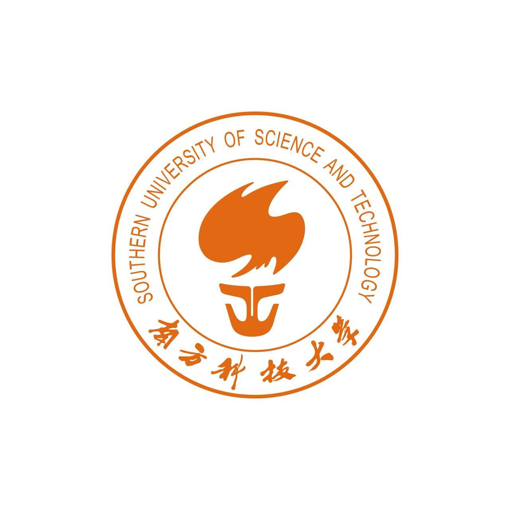

About Me
Hello! I am Yan Zihao, an undergraduate student in Computer Science and Technology at Southern University of Science and Technology.
My interests include AI agents, large language models, model fine-tuning, and software systems. Recently, I have worked on agent workflows, retrieval-augmented generation, automated program repair, and education-oriented LLM applications.
Education

Southern University of Science and Technology
B.Eng. in Computer Science and Technology
Undergraduate Student
Sep. 2023 - Jul. 2027 · Shenzhen, China
Experience
SUSTech Student Productivity Automation Agent
Core developer. Designed the agent loop and control logic for aggregating schedules, announcements, course information, and files from multiple campus sources.
Worked on Agent Gateway, RAG-based campus handbook Q&A, tool invocation, memory mechanisms, and Human-in-the-Loop feedback.
sustech-cs304/team-project-26spring-26s-13
Mar. 2026 - Present
EduCopilot: Logic-Enhanced LLM for Education
Core developer. Generated high-quality instruction-tuning samples with a hybrid strategy and used DeepSeek-V3 to build a chain-of-thought reasoning dataset.
Fine-tuned models with Unsloth and QLoRA through a two-stage SFT + DPO pipeline for education-oriented reasoning tasks.
Nov. 2025 - Jan. 2026
LLM-Based Automated Program Repair Agent
Advisor: Yuqun Zhang
Built an AutoGen workflow that integrates LLMs with runtime environments to reproduce, localize, debug, and repair Java, Python, and C programs.
Designed a Reproduce-before-Repair process to provide execution context before patch generation and reduce model hallucination.
Jul. 2025 - Jan. 2026
Contact
Email: 12313629@mail.sustech.edu.cn
GitHub: github.com/Apricity177